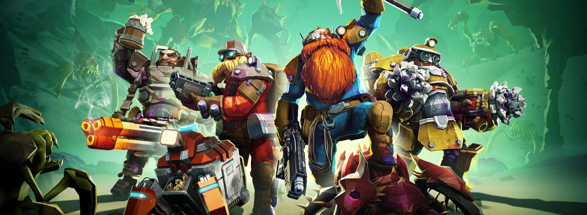
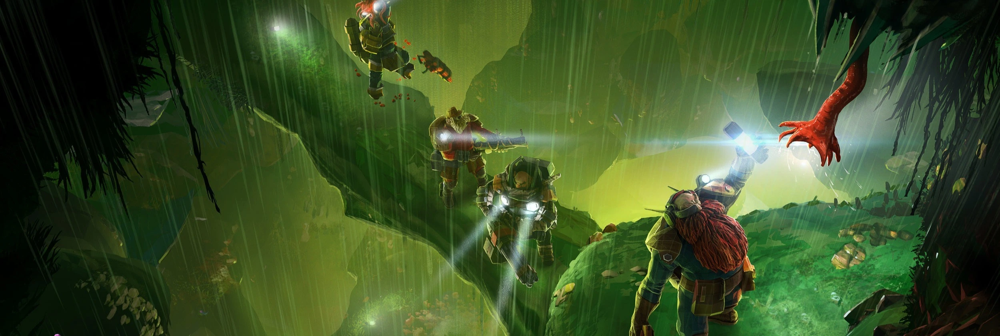

Deep Rock Galactic
Together, we forge tomorrow

Deep Rock Galactic is a forward-thinking, innovative mining company
committed to redefining the future of resource extraction in the galaxy.
With a strong focus on cutting-edge technology and safety, we believe in
pushing the boundaries of exploration while maintaining the highest
standards of operational excellence. Our core values revolve around
teamwork, resilience, and sustainability, ensuring that every mission is
not only profitable but also responsible.
At Deep Rock Galactic, we’re not just mining — we’re shaping the
future of space mining, one planet at a time.
Ongoing operation
Deep Rock Galactic's mission on Hoxxes IV is a bold venture into one of
the galaxy's most perilous and resource-rich planets. With its hazardous
terrain, unpredictable cave systems, and aggressive wildlife, Hoxxes IV
presents a unique challenge for our experienced mining crews. Our teams
are equipped with advanced tools and technology to safely navigate the
depths, extract rare materials like Morkite and Jadiz, and gather
crucial data. The mission focuses on efficiency, safety, and resilience,
as we strive to unlock Hoxxes IV's potential while overcoming the
planet’s natural obstacles.

Our team
Our success is driven by a team of highly skilled professionals who
embody the spirit of innovation, determination, and teamwork. From
seasoned geologists and engineers to elite combat specialists and expert
drillers, every member of our crew plays a crucial role in ensuring the
success of each mission on the most unforgiving planets.
Scout
The Scout is the team’s agile navigator, using advanced mobility
tools to explore Hoxxes IV’s challenging terrain. They’re
responsible for discovering resource-rich areas, scouting for
potential dangers, and keeping the team informed, helping ensure the
mission stays on track with clear visibility of the environment.
Engineer
The Engineer is the team’s operational support, deploying essential
tools like turrets and platforms to assist in navigation and
defense. They play a key role in maintaining equipment and ensuring
safe, efficient paths for the team to follow, while also providing
tactical support during high-pressure moments.
Driller
The Driller is the team’s excavation specialist, using powerful
drills to break through Hoxxes IV’s tough rock layers and uncover
valuable resources. They create pathways, open up access to new
areas, and ensure the team can reach their objectives while managing
the physical demands of the planet’s harsh conditions.
Gunner
The Gunner is the team’s heavy support, equipped with high-powered
weaponry to protect the crew from the dangerous wildlife of Hoxxes
IV.Their primary responsibility is to provide tactical security,
ensuring the safety and protection of the team while maintaining
operational continuity and facilitating mission success.